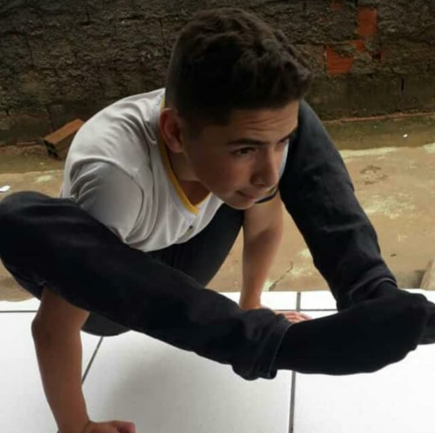
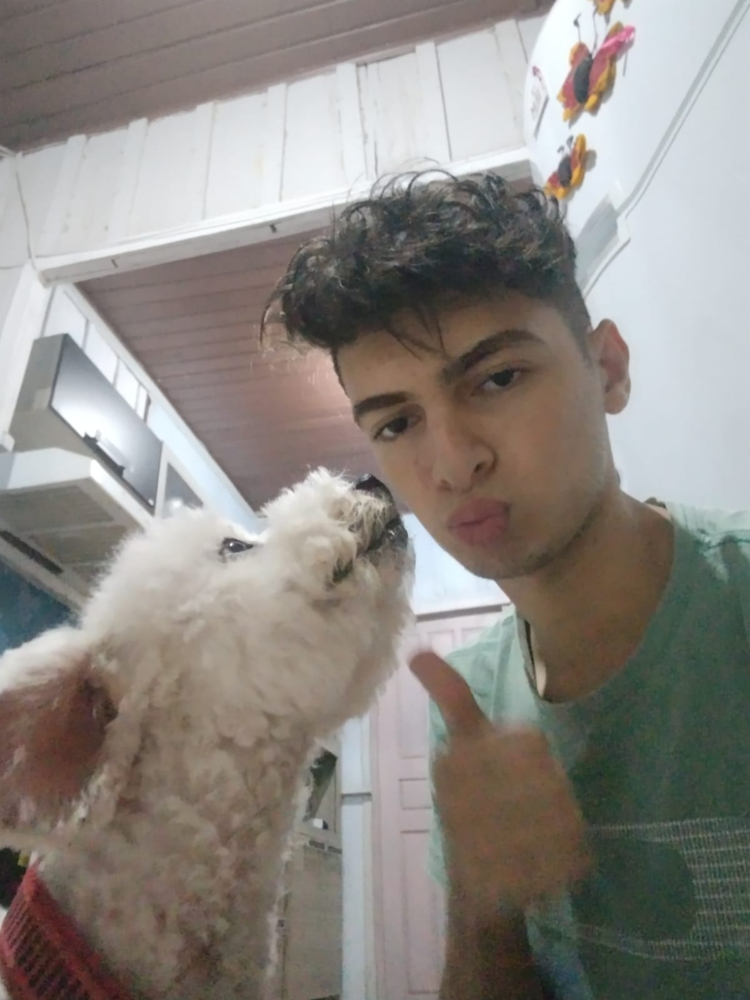
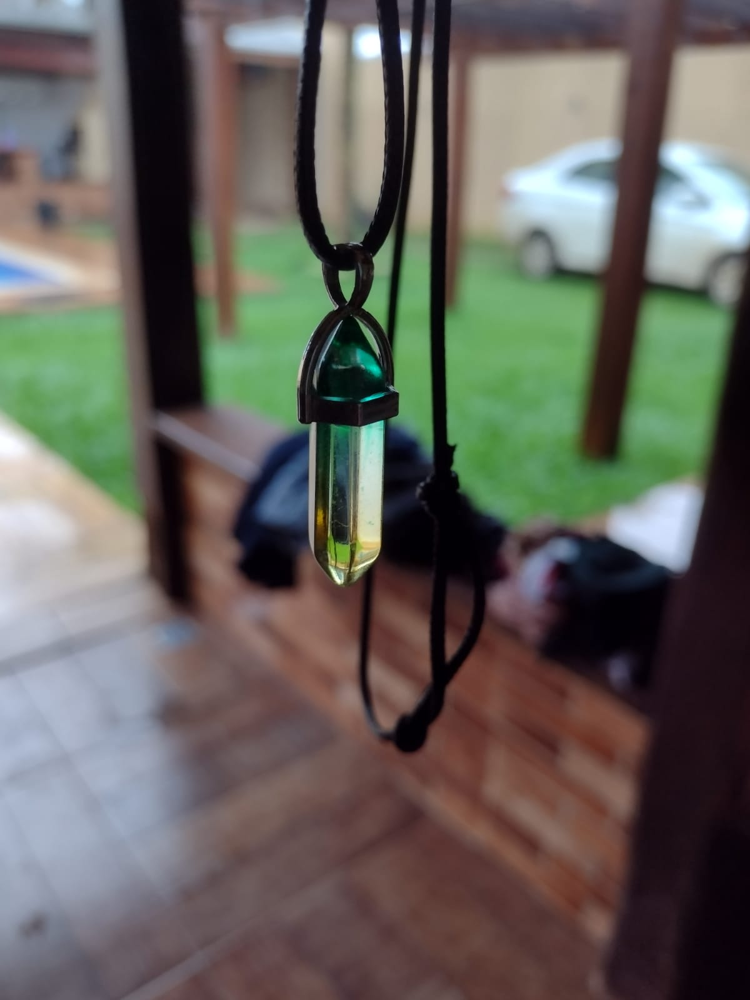
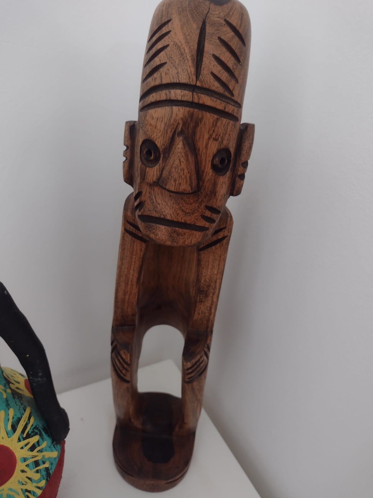
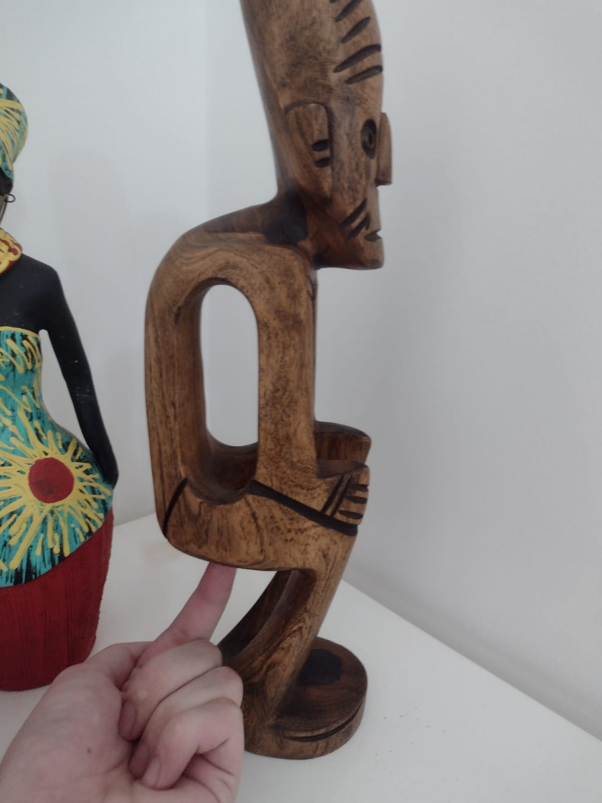
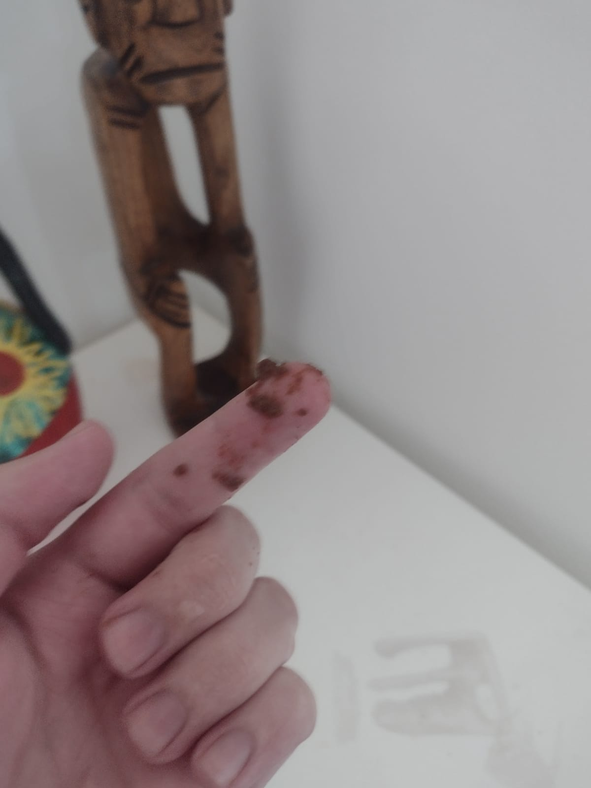
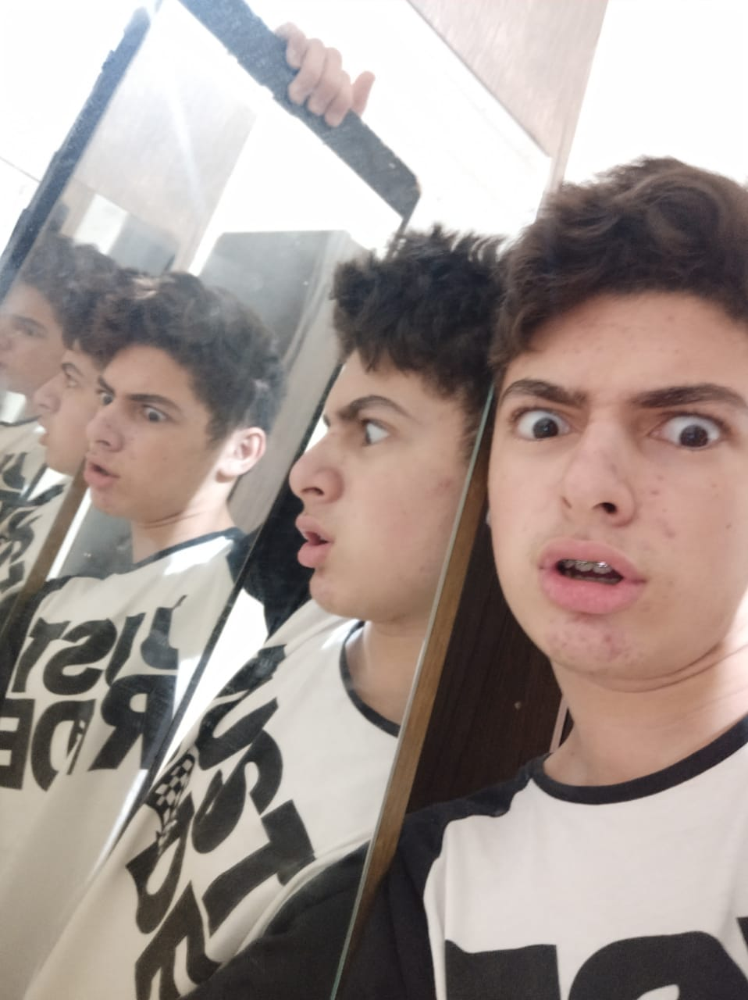
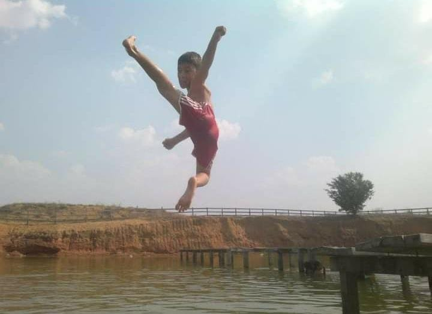

Ele possui habilidades suficientes para executar manobras exóticas e arriscadíssimas.
Segundo o Adm, executar essa manobra e errar significa morte certa, podendo desenvolver candidiase
anal no braço

Muito amigo dos animais. Quando vê um animal indefeso não hesita em ajudá-lo.
Não gosta de comer animais, pois todos eles tem sua vida e é importante igual a de todos.
O único animal que esse homem comeu em toda sua vida foi a sua mãe, apenas.

Possui um colar sobrenatural muito antigo achado na antiga Pangéia, quando todos os continentes
se encontravam. Esse acessório divino vem de uma civilização esquecida pela história, que possui
o nome hebraico de אכלתי את התחת של מי שקורא. Muitos afirmam que esse colar tem o poder
de comer o cu de quem ta lendo.😥

Ele já enfrentou uma estátua do líder do pajé.

Ele já futucou o bumbum de uma estátua do líder do pajé.

Ele descobriu que o pajé não utiliza papel higiênico.

Luis é um Homem que, por ser gostoso, consegue fazer amizades com facilidade. Por esse mesmo
motivo, você deve se estar se perguntando: "É possível estar todos os amigos deste Homem em
uma única foto?". Normalmente, não seria. Mas nada para ele é impossível. Apesar de seres praticamente
incontáveis, ele conseguiu essa artimanha. Curiosamente ele chama todos seus amigos de "vozes da
minha cabeça".
Apesar de ser um Homem macho alpha, másculo e muitos dizem que se assemelha com Henry Cavill,
sua deliciosidade não se limita a apenas um gênero. Tanto em vestimentas masculinas quanto feminas ele
destaca sua magnífica rabeta. Se você passar com seu namorado perto desse homem, se considere solteira.

Com apenas 3 mêses de idade, matou 43 jacarés no meio do oceano Pacífico, tudo com apenas uma voadora.
Suas habilidades com a voadora chegou a nível internacional, e por isso proibiram esse Homem de usar
sua arte marcial. Dizem os rumores que sua voadora nos dias de hoje poderiam mudar o sentido da rotação
da Terra.